OnePlus 6
Из года в год компания OnePlus радовала нас необычными телефонами для настоящих гиков, предоставляя топовое железо, возможность перепрошивки и кастомизации, не прося за это “миллионы денег”. Да и дизайн устройств был уникальным. Вот только последние пару моделей поддались трендам и понемногу начали становиться похожими на другие смартфоны, обрастая трендовыми элементами. Взяв OnePlus 6, я осознал, что в плане дизайна это типичный флагман 2018 года, но это же не помешает телефону стать лучшим за свою цену? Давай разберемся.
Дизайн
В плане дизайна особых изменений не произошло. Многие писали в комментариях под обзором, что “как так, ведь и стекло вместо алюминия, и камеру развернули”. Материалы действительно поменялись, а некоторые элементы поменяли свое расположение, но общие черты корпуса остались прежними, да и лежит в руке OnePlus 6, как тот же OnePlus 5\5T. Это, как и раньше, увесистый, качественно собранный телефон, вопросов тут нет.
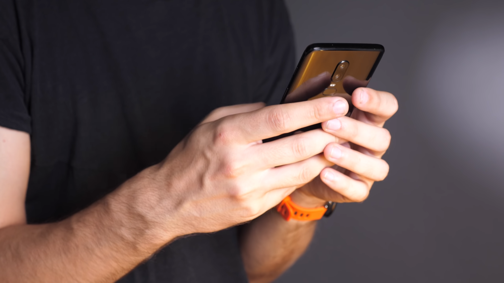
К слову, стеклянная задняя панель тоже продиктована трендами, ведь никакого функционального смысла в ней нет. К сожалению, беспроводной зарядки тут нет. Я знаю, что это не самая популярная возможность в наших реалиях, но иметь её в телефоне было бы неплохо
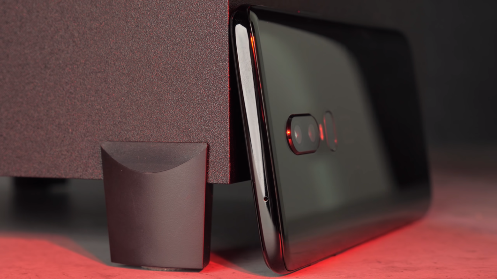Рамка тут металлическая, на ней разместились плотные кнопки регулировки громкости, включения, лоток для SIM-карт и ползунок переключения в беззвучный режим. Последний поменял свое расположение, переехав на правую грань. На удобстве это не сказалось и, как раньше, им намного быстрее выключить звук или переключиться в режим вибро.
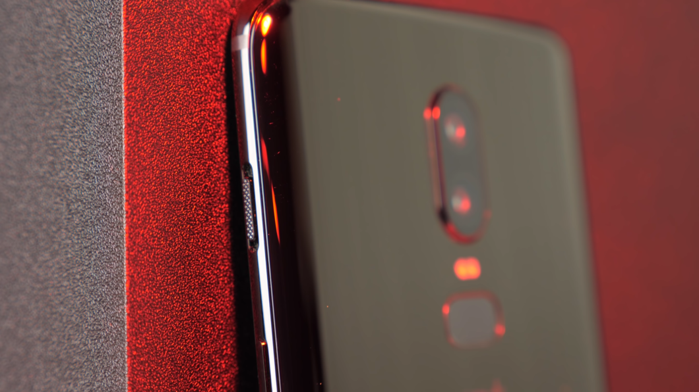На нижнем торце расположился самый правильный, на мой взгляд, набор: микрофон, динамик, USB Type-C и разъем для наушников. Так что пользователь волен сам выбирать, какими наушниками ему пользоваться, и принуждения использовать переходник тут нет.
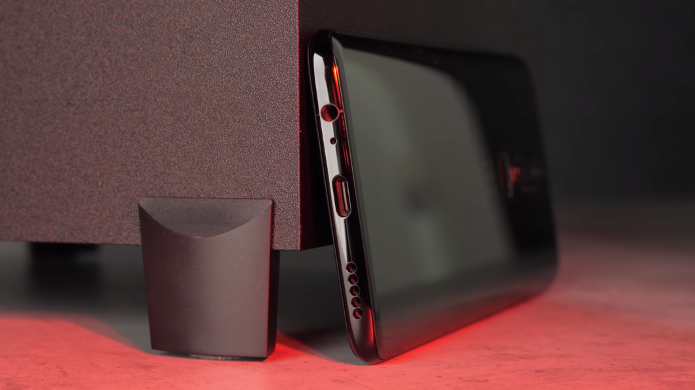Как и подобает флагманам 2018 года, влагозащита в OnePlus 6 есть, но точной сертификации нет, и плавать с устройством нельзя. Максимум, на что можно рассчитывать – достать телефон во время дождя и пользоваться, не боясь его повредить.
Экран
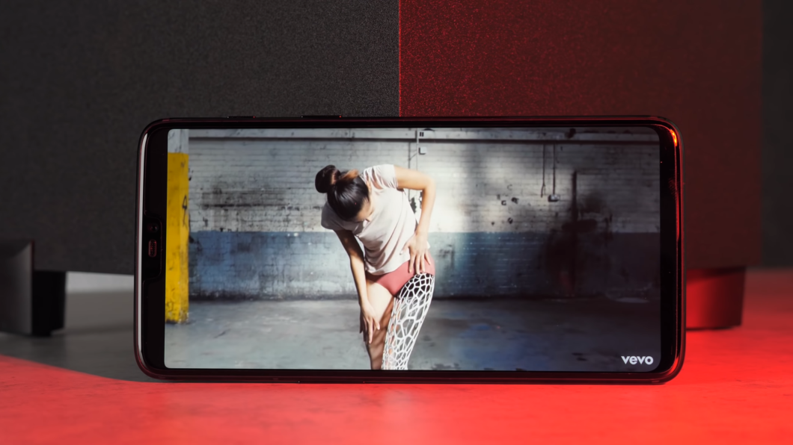Еще одно подтверждение того, что компания поддалась трендам – это дисплей. А точнее, монобровь, которая теперь есть и в OnePlus. Наличие этого выреза, как и всегда, ничем неоправданно. Никаких дополнительных модулей, лазеров, тепловизоров и прочих штук тут нет. Лишь камера, микрофон и датчик освещения.
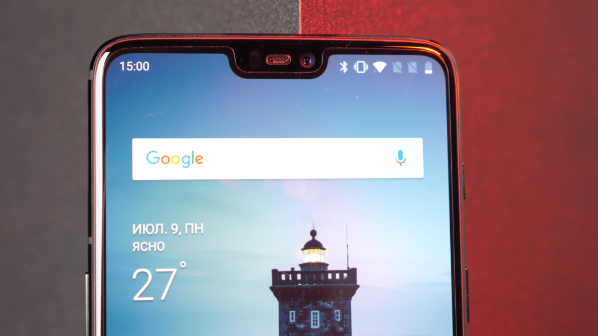Вот только весь этот набор был в OnePlus 5T, который оснащали широкоформатным дисплеем 18 на 9, и там обошлось без челки. Но, как бы мне не нравился этот тренд, сам экран в телефоне отличный. Тут установлена 6.28-дюймовая AMOLED-матрица с разрешением 2280 на 1080 точек. Благодаря используемой панели, вырез на экране можно спрятать (в настройках есть такая возможность) и его действительно не будет видно.
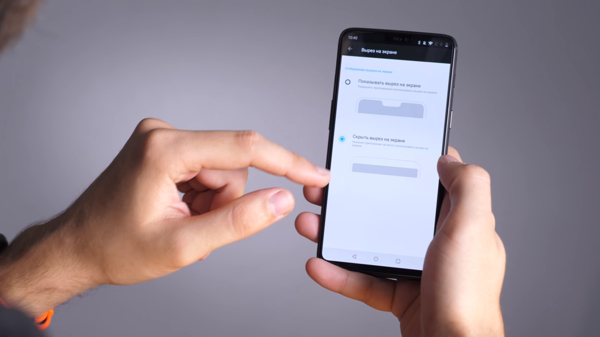Экран действительно очень хороший. Он яркий, насыщенный, с возможностью настройки цветопередачи (есть профили sRGB и DCI-P3) и дополнительными режимами (Ч/б и защиты глаз). Мне очень понравился именно черно-белый пресет, в нем читать на телефоне прям вообще гуд, плюс к автономности немного прибавляется.
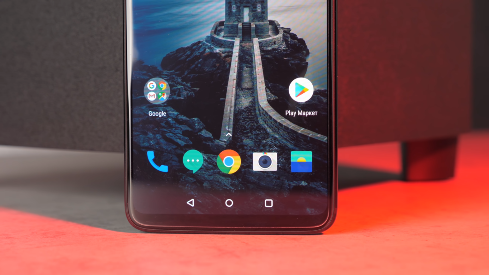Да и просто, если вы привыкли к некой блеклости IPS-матриц, в настройках можно все подправить. Так что за дисплей можно простить челку. Плюс прямо с завода не телефоне есть защитная пленка, что приятно.
Характеристики и производительность
В плане железа претензий вообще нет, перед нами настоящий флагман. В телефоне установлены: Snapdragon 845, 6/8 ГБ оперативной памяти и 64/128/256 ГБ встроенного накопителя. Такой комплект позволяет не волноваться о производительности и запускать все современные игры на максималках. Если нужен смарт для мобильного гейминга, вот вам отличный вариант. Правда, телефон немного тротлит во время “потных” сессий, но на конечную производительность это мало влияет.
Беспроводных модулей полный набор, есть все самое необходимое: Bluetooth 5.0, Wi-Fi и NFC, который очень актуален в наших реалиях. А вот USB Type-C тут версии 2.0, на быструю передачу данных можете не рассчитывать, но кто вообще в 2018 году подключает телефон к ПК и зачем?
Операционная система последняя, Android 8.1, поверх которой поставили фирменную оболочку Oxygen OS. Её практически не отличить от стокового Android, вот только возможностей кастомизации тут намного больше. Так что за оболочку тоже лайк
Автономность и звук
Но не может же быть все так хорошо, чтобы и характеристики топовые, и цена вкусная. На данный момент в телефоне есть серьезная проблема с автономностью. При моем обычном использовании (социальные сети, пару часов навигации и мессенджеры) телефон выключался к 6-7 часам дня, и это несерьезно. Возможно, проблема кроется прошивке, и это скоро исправят, но сейчас дела обстоят именно так.
Приходится носить с собой павербенк или охотиться за розеткой, ведь быстрая зарядка Dash Charge может довольно оперативно подзарядить севший аккумулятор. За 30 минут получаем больше 50% батареи.
Со звуком тоже не все так хорошо. Мало того, что верхний динамик не подыгрывает нижнему, так еще и защитная сетка от попадания влаги уменьшает громкость. В итоге – очень средний звук и никакого стереоэффекта, так что смотреть фильмы/играть в мультиплеер можно только в наушниках. В них телефон играет прям хорошо. Есть и кучи настроек, и громкости хватает. Так что большинству пользователей этого хватит с головой.
Камера
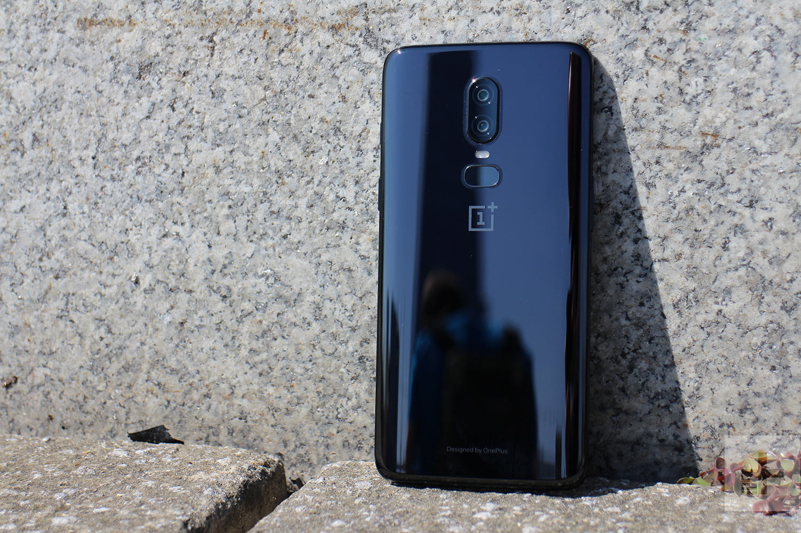В предыдущих моделях телефона камеры были неплохими. Фотографировали они хорошо, на уровне конкурентов, но до флагманов было далеко, и, если вы ждали, что в OnePlus 6 произойдет значительный рывок в качестве, то спешу вас разочаровать — его не произошло. В телефоне две основные камеры с ОДИНАКОВЫМ фокусным расстоянием, при этом у приложения есть “оптическое” двукратное увеличение. Основная на 16 МП (есть оптическая стабилизация) и дополнительная на 20 МП, у обоих диафрагма f/1.7. Почему компания не использовала во втором модуле телеобъектив, для меня осталось непонятным.
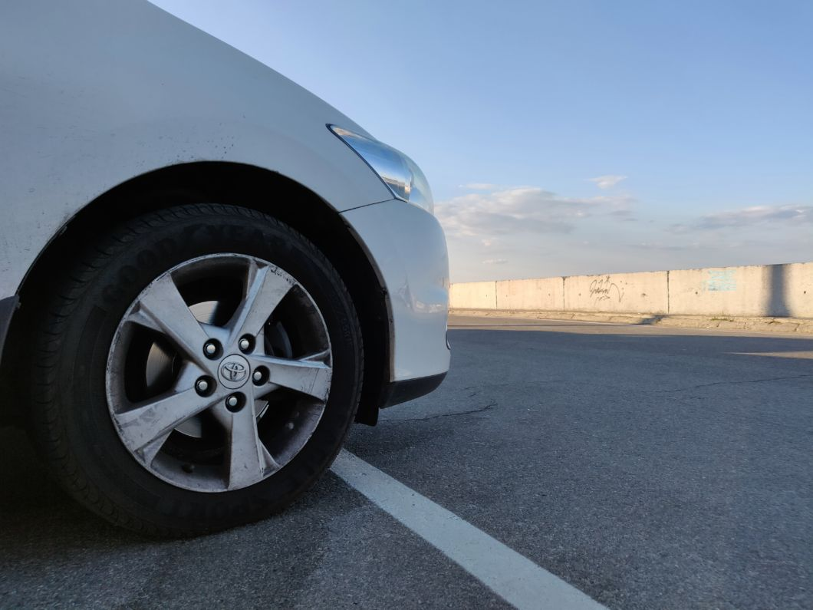Фотографирует OnePlus неплохо. Получаются довольно детальные снимки с хорошим динамическим диапазоном. Но, как только света не хватает, кадры становятся шумными и не особо резкими. Применение HDR можно смело ставить в автоматический режим, в большинстве случаев его работа адекватна, и лишь иногда с цветами может происходить что-то странное. Режим “Боке”, как и в большинстве других телефонов, скорее баловство, чем полезная фишка.
Использование “оптического” зума значительно убивает количество деталей и общее качество снимков, так что использовать его стоит с осторожностью. На данный момент результаты весьма средние, но есть надежда на обновления, которые исправят и это.
Видео пишется в 4К и ничего особенного в нем нет, все вполне стандартно, как для Android-смартфона. А вот фронталка хорошая, и 16 МП модуль делает нормальные снимки.
Итог
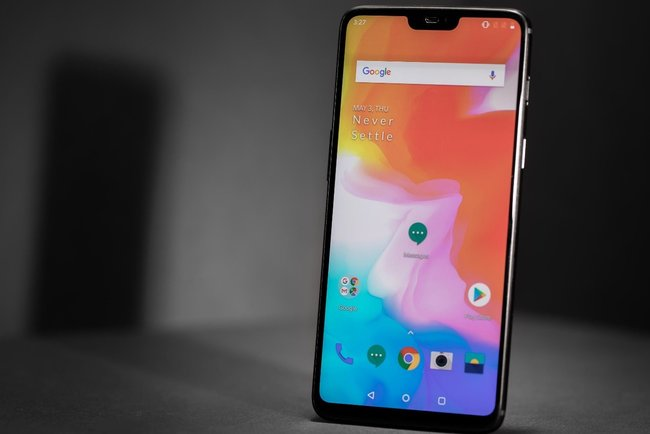И вот все с телефоном вроде бы хорошо. Производительность есть, трендовые фишки тоже, дизайн современный, но не хватает ему какой то изюминки. Очень жаль, но OnePlus 6 стал очередным безликим флагманом, который тяжело отличить от других. Попользовавшись устройством, у меня совершенно не возникло к нему никаких эмоций. Это просто хороший телефон за свои деньги.
Если вы только думаете взять телефон – OnePlus 6 неплох. Но владельцам предыдущих моделей волноваться не стоит, особой разницы в производительности нет, да и серьезных причин для обновления тоже не появилось.